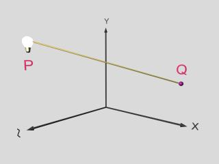
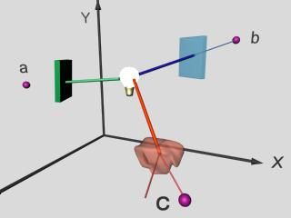

Donats dos punts P i Q qualsevol d'una escena geomètrica, definirem que el punt Q és visible des de P, i ho representarem P~Q, ssi un raig de llum I que parteix de P en direcció a Q (IP==>Q), arriba a Q amb una intensitat no nul·la.
|  |  |
L'atenuació de la llum pot ser deguda bé a objectes intermedis que atenuen parcialment (objectes transl·lúcids) o total (objectes opacs) la intensitat del raig, o bé al propi medi en que es propaga la llum (exemples boira, contaminació). Els diferents elements que atenuen la llum s'anomenen obstacles (en la figura anterior podem veure alguns exemples).
En aquest capítol considerarem com a únics obstacles els objectes opacs. Això porta a la següent definició de visibilitat geomètrica: donats dos punts P i Q qualsevols d'una escena geomètrica, P~Q, ssi un segment de recta definit entre P i Q no intersecta amb cap superfície de l'escena. La visibilitat geomètrica entre un punt P i una superfície, és el conjunt de punts de la superfície visibles des de P.
Anomenarem determinació de visibilitat d'una escena al càlcul de la visibilitat geomètrica entre l'observador i els objectes de l'escena. Per a cada posició de l'observador es determinaran els punts visibles de les superfícies dels objectes. Sovint els diferents algorismes existents es restringeixen a la geometria interior a la piràmide de visió i com a únics obstacles consideren les cares opaques dels objectes.
Un cop es coneix la visibilitat de l'escena, una segona qüestió a
plantejar-nos per a obtenir-ne una imatge realista és el càlcul del color en cada punt visible.